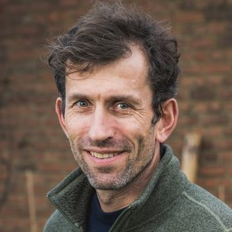
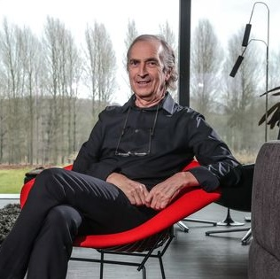
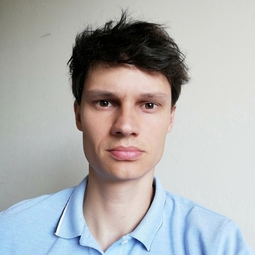
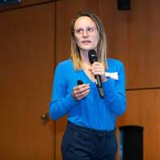
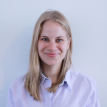
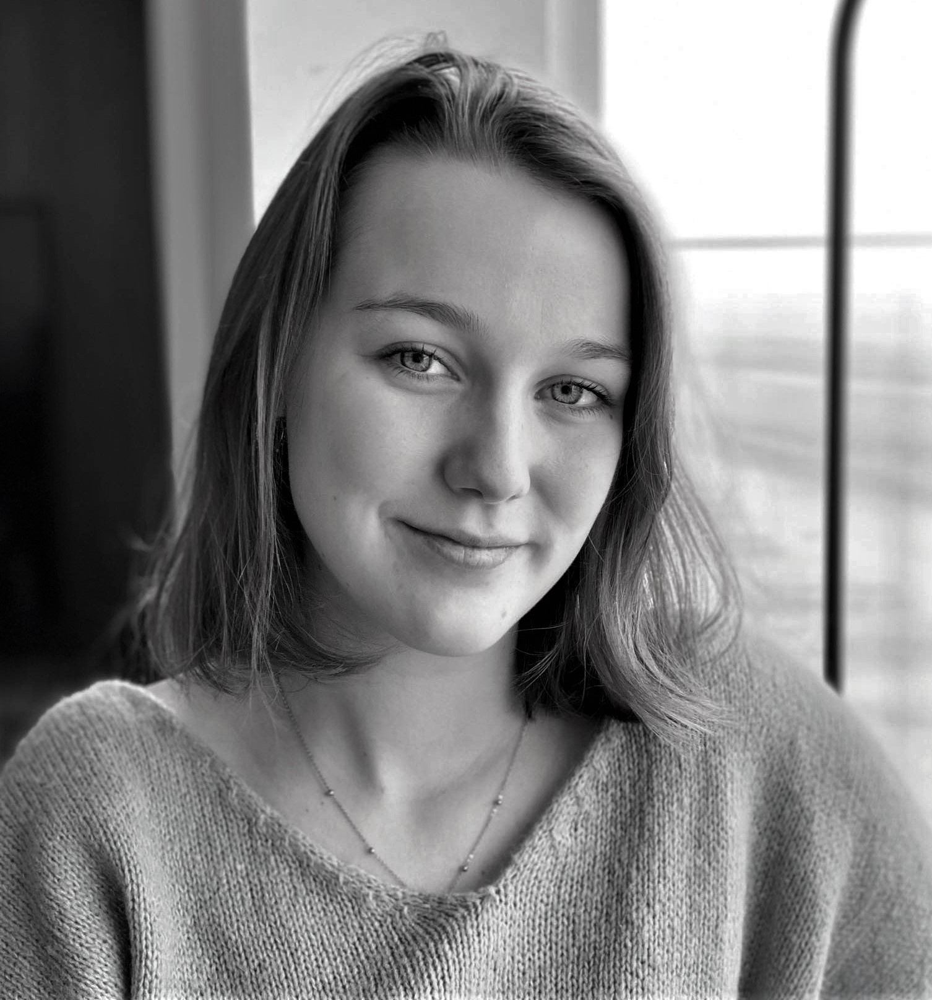

Who we are

Maarten Vansteenkiste
Professor at Ghent University within the Department of Developmental, Personality and Social Psychology. Inspired by the Self-Determination Theory, he tries to formulate an answer to motivational questions and how the social environment can interact with our motivation and psychosocial well-being. He served as a co-chair of the Psychology and Corona Expert Group and was a member of the GEMS (Crisis Strategy Expert Group for COVID-19).

Omer Van den Bergh
Emeritus Professor of Health Psychology at the Faculty of Psychological and Educational Sciences, KU Leuven since October 2018. His main research interests and expertise focus on the interaction between behaviour and health, (psycho)physiological dysfunction, illness and the relationship with self-reported symptoms. Since the beginning of the crisis, he has been co-chair of the expert group Psychology and Corona.
Vincent Yzerbyt
Professor of social and cultural psychology and statistics and the director of the Social Psychology Lab at UCLouvain. A renowned expert on intergroup relations, social cognition, and stereotypes, his expertise also includes statistics and research methods. As former president of the European Association for Social Psychology, the Crisis Centre liaison for the COVID-19 group of social psychologists and a member of the Psychology and Corona Expert Group and the GEMS+, he contributes to the management of the corona policy by focusing on social psychological dimensions of the COVID-19 pandemic and their impact on health behaviours and vaccine hesitancy.
Olivier Luminet
Research director at the Fonds de la Recherche Scientifique (FRS- FNRS) and Professor of health and emotion psychology at UCLouvain and ULB. His research focuses on the interactions between 1) emotions, identity, and memory, and 2) emotions, personality and health. Since the COVID-19 pandemic, he has extended his expertise into psychological factors predicting health behaviours. He is a member of the expert group Psychology and Corona and of the Superior Health Council. Furthermore, he is the past president of the Belgian Association for Psychological Sciences(BAPS) and director of the research centre Health, Emotion, Cognition, and Memory.
Olivier Klein
Professor of social psychology at ULB and teaches part-time at the University of Mons. Among other topics of interest (social stereotypes, collective memory, sexism), his research bears on psychological vulnerability to misinformation and belief in conspiracy theories. He works in the expert group Psychology and Corona, is director of the Centre for Social and Cultural Psychology at ULB and co-editor-in- chief of the International Review of Social Psychology.

Mathias Schmitz
Postdoctoral researcher at the Faculty of Psychology and Educational Sciences of UCLouvain. He completed his PhD at the same faculty. His research expertise focuses on health psychology, intergroup relations, political psychology, methods, and statistics. Since January 2021, his postdoctorate is dedicated to the study of the relationship between different psychological variables and preventive behaviour in relation to the corona crisis. In this context, he joined the Motivation Barometer team, where he is specifically in charge of data management and analysis.

Pascaline Van Oost
a master’s degree in social psychology from UCLouvain and is currently a doctoral researcher at the Laboratory of Social Psychology of UCLouvain in collaboration with ULB. Her research focuses on the relationship between prejudice, secularism, intergroup relations, and political psychology and joined ULB as part of the Motivation Barometer team in January 2021. Within the group, her main task is to elaborate, manage, and distribute the questionnaires.

Sofie Morbée
graduated as a clinical psychologist and has been working as a PhD student at Ghent University since 2017. In her doctoral research she studies the role of factors that influence the (de)motivational behaviour of coaches and parents of young athletes. With her expertise in motivation and Self-Determination Theory, she has been contributing to the Motivation Barometer project since the beginning of the pandemic, where she is responsible for the development and distribution of the questionnaire.

Joachim Waterschoot
graduated as an experimental psychologist and obtained a Master of Statistical Data Analysis. He is currently working as a PhD student at Ghent University, conducting research on boredom and how people keep themselves motivated. With a passion for developmental psychology and Self-Determination Theory, his doctoral research is currently dedicated to the Motivation Barometer project. Within this project, he is responsible for the website and data coordination, management, analyses, visualisation and reporting.

Eveline Raemdonck
graduated as a clinical psychologist at Ghent University. With a passion for psychogerontology and care for the elderly, she started a Research Master in Gerontological Sciences at the VUB in 2020. Besides this study, she has been contributing to the Motivation Barometer project since February 2022, where she is responsible for the inventory and organization of the questionnaire.

Marie Brisbois
holds a master’s degree in neuropsychology from the University of Liège. She is interested in many fields of psychology, ranging from intergroup relations, stereotypes, prejudice and the neurophysiological basis of behaviour. Since January 2022, she has been working for the Centre of Social and Cultural Psychology of ULB and joined the team of the Motivation Barometer project. Within this project, she is mainly responsible for the inventory and organization of the questionnaire.
xxxbée
xx